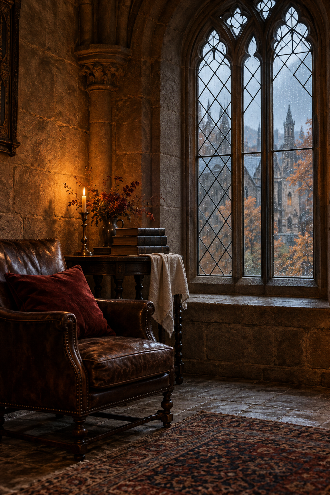
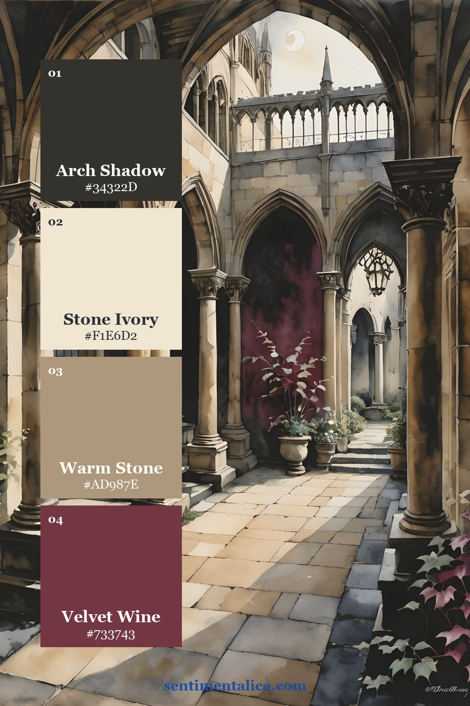
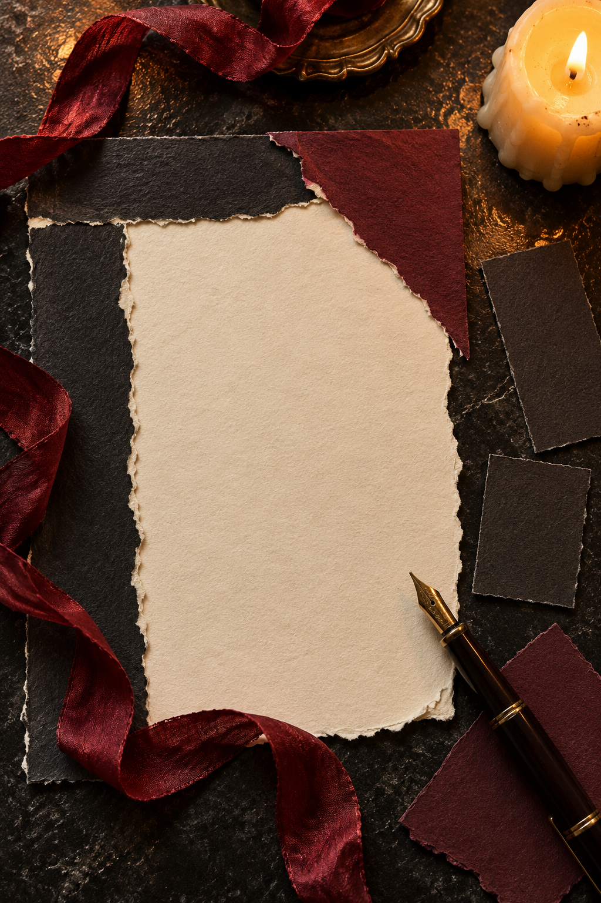
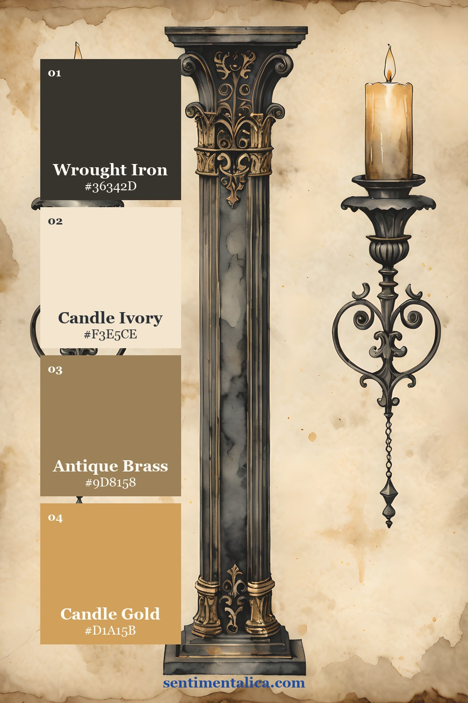
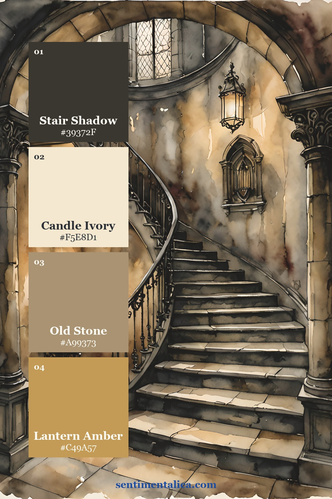
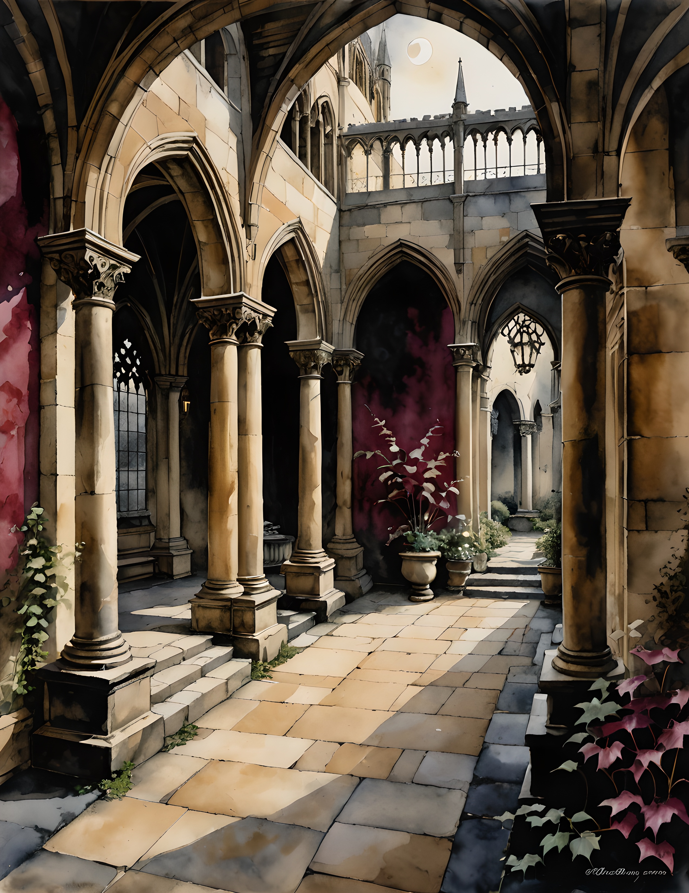
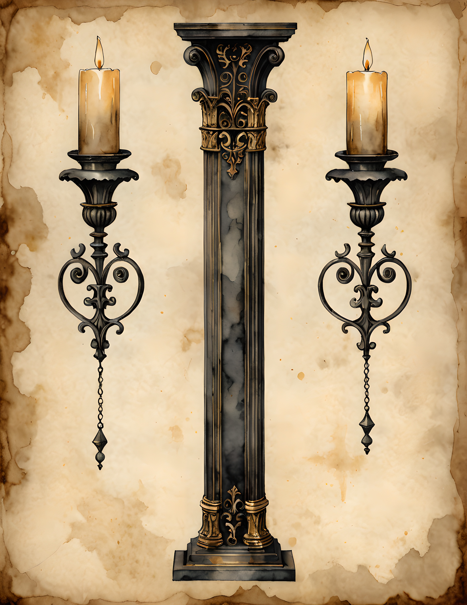
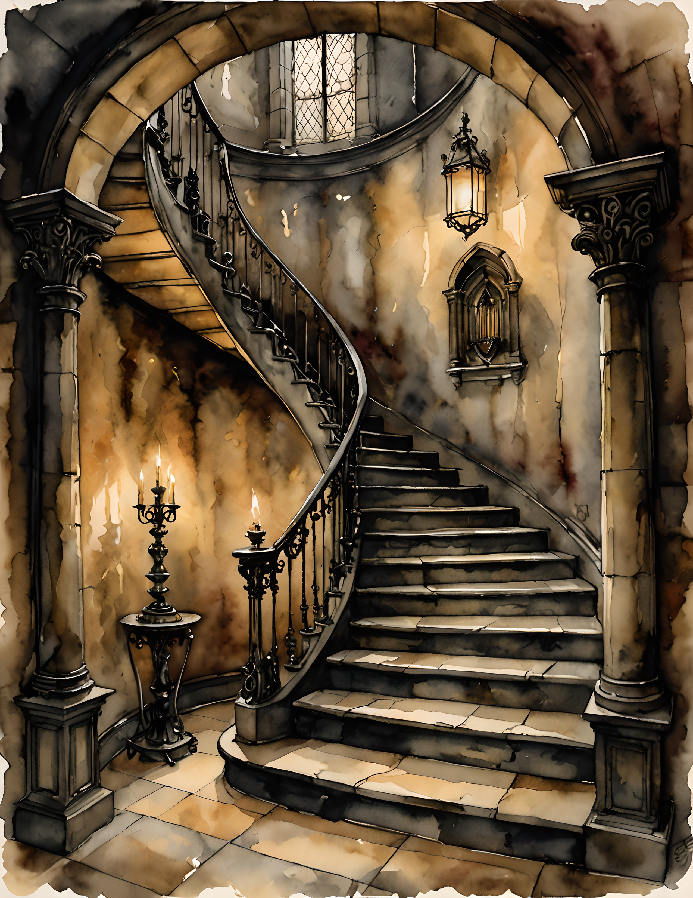

A gothic journal page can be rich with architecture, shadow, and worn-paper color while still giving your words somewhere clear to live. The useful decision is where the atmosphere ends and the writing begins. Make a spread with one dark visual anchor and a separate pale writing field. Dark Manor’s watercolor images can supply the setting; your own paper and handwriting supply the story.

Reserve the Writing Field First
Before choosing artwork, tear or cut a piece of pale paper large enough for the entry you want to write. Place it on the open spread and write the first line lightly on a practice scrap. This gives you a realistic idea of how much space your handwriting needs, rather than fitting the story into whatever gap remains.
Keep the writing field away from the gutter, where the book curves. If the entry is longer than expected, use the opposite page or a folded note. Do not make your writing smaller simply to accommodate another decorative layer. The page is allowed to hold both atmosphere and an ordinary, readable account.
Let the image hold the atmosphere and the pale paper hold your voice.

Choose Colors by Their Jobs
Use the palette cards as examples of colors drawn from individual collection pages, rather than a requirement to buy matching supplies. The dark anchor gives the composition weight. A light paper tone carries the writing. A middle shade connects the artwork to the paper, and one accent draws attention to a small detail.
When choosing your own page, let the actual artwork guide the shades. A warm image may call for cream and brown paper, while a cooler one may sit better beside a softer grey-blue. Keep the writing paper clearly lighter than the pen. A pale accent that looks lovely in a swatch can still be difficult to read as text.


Let the Building Frame the Entry
Choose one architectural detail that feels like the setting of the words you want to keep: a doorway for a beginning, a window for watching, or a distant building for a remembered journey. These are associations you bring to the artwork. They do not need to become a complicated symbolic system.
Place the chosen image beside the writing field, then try a narrow strip overlapping one edge. Compare the two arrangements before gluing. If the image loses its sense of place when cropped, keep it larger and use fewer additional scraps. A strong setting needs less surrounding decoration than you may expect.

Repeat a Small Detail, Then Stop
Carry one color from the image onto a short date label or a thin paper edge. This connects the plain writing field to the darker artwork without surrounding the words with dense texture. Leave another edge completely clear so the spread has an easy point of entry.
For a practical test, step back from the table. You should notice the artwork, the writing area, and the small date or title as distinct parts. If every corner is equally busy, remove a layer and look again. Gothic mood can come from contrast and a single substantial image; it does not require every piece of paper to be distressed.
Use a Story That Suits the Setting
Write about a place you remember, a passage you are responding to in your own words, or a scene you are inventing. Give the entry a concrete opening: the sound of footsteps, a room at dusk, or the view through a window. If you are recording a real event, include its date somewhere plain.
Finish the layout only after reading the entry. You may find that a quiet final sentence deserves an empty margin more than another ornament. Keep collection artwork and your own writing distinct enough to appreciate both. The following pages offer different starting points for that balance; choose the one whose setting makes you want to write.
Choose a Page for Your Own Layout
Compare the real collection pages below before deciding which image belongs in your project. Look for a focal detail that supports your story, then provide the writing space with your own plain paper. The palette cards show color possibilities, while these pages let you see the artwork itself.



Find more gentle paper projects in the Sentimentalica journal.